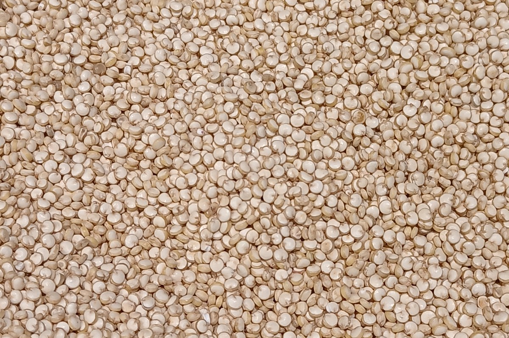
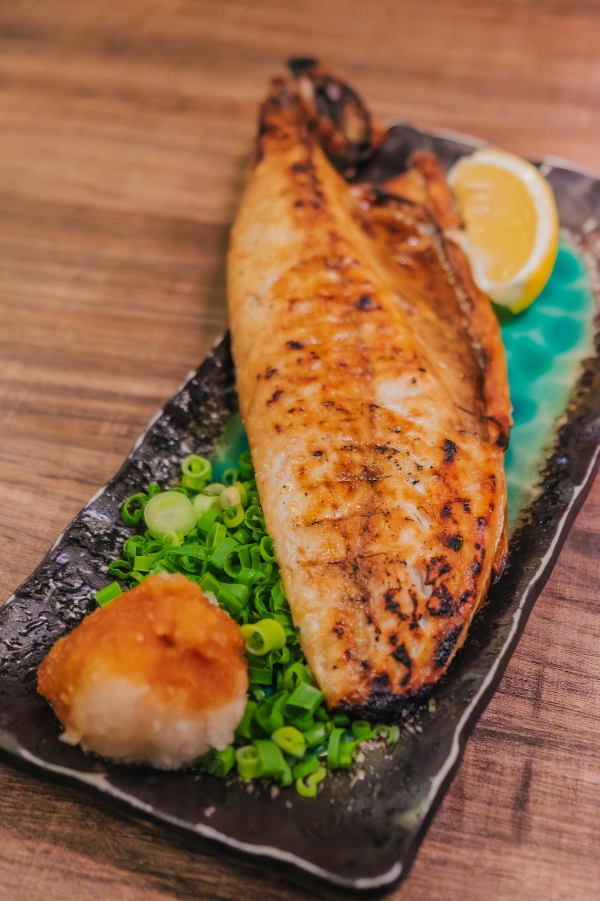

热门起点
刚开始抗炎饮食？
先看如何开始抗炎饮食，用可以重复的正餐、零食和饮品搭好第一周。
这周要买菜？
用购物清单选择水果、蔬菜、主食、健康脂肪和饮品，让它们真的出现在餐桌上。
正在比较食物？
浏览最值得优先吃的抗炎食物，或用按分类看食物整理自己的短清单。
按分类浏览
全部食物

蓝莓
适合早餐和零食的高抗氧化浆果。
水果
三文鱼
富含 omega-3，适合做抗炎正餐。
鱼类
西兰花
适合简单咸口餐食的十字花科蔬菜。
蔬菜
姜黄
适合烹饪和温热饮品的金黄色香料。
香料
橄榄油
适合烹饪和调味的健康脂肪基础食材。
健康脂肪
菠菜
适合日常做菜和奶昔的营养型绿叶菜。
蔬菜
绿茶
适合慢慢养成日常习惯的多酚饮品。
饮品
大蒜
家庭烹饪里很容易用起来的基础调味食材。
香料
核桃
适合当零食，也适合撒进早餐里的坚果。
坚果
奇亚籽
适合早餐和奇亚籽布丁的高纤维种子。
种子
燕麦
适合做早餐、也很容易搭配的全谷物主食。
全谷物
生姜
适合热饮、料理和奶昔的温热香料。
香料
牛油果
适合正餐和加餐的柔滑健康脂肪来源。
水果
草莓
适合零食和早餐碗的酸甜浆果。
水果
扁豆
适合汤、碗餐和提前准备午餐的豆类。
豆类
红薯
适合日常正餐的根茎类蔬菜。
蔬菜
石榴
适合撒在早餐碗和沙拉里的水果。
水果
羽衣甘蓝
适合沙拉和奶昔的绿叶蔬菜。
蔬菜
巴旦木
适合零食和早餐搭配的坚果。
坚果
抹茶
适合做日常饮品的浓缩绿茶粉。
饮品
亚麻籽
适合奶昔、燕麦和烘焙的种子。
种子
肉桂
适合燕麦、热饮和烘焙的温暖香料。
香料
番茄
适合生吃和熟食的日常食材。
蔬菜
藜麦
适合沙拉和饭碗的全谷物。
全谷物
鹰嘴豆
适合正餐、零食和鹰嘴豆泥的豆类。
豆类
沙丁鱼
价格友好、也容易放在手边的小型鱼类。
鱼类
鲭鱼
富含 omega-3，适合简单晚餐的脂肪鱼。
鱼类
金枪鱼
方便常备的鱼类蛋白，需要注意汞风险。
鱼类
罗勒
适合家常咸味料理的新鲜香草。
香草
迷迭香
适合烤盘餐和家常烹饪的香草。
香草
牛油果油
适合较高温烹饪的健康脂肪油脂。
健康脂肪
樱桃
适合零食和餐后水果的浆果类选择。
水果